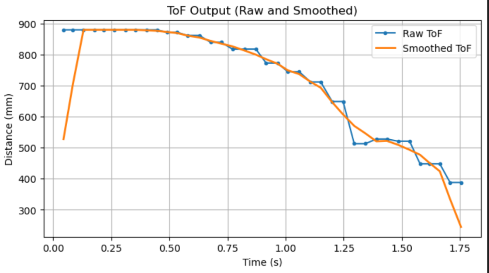
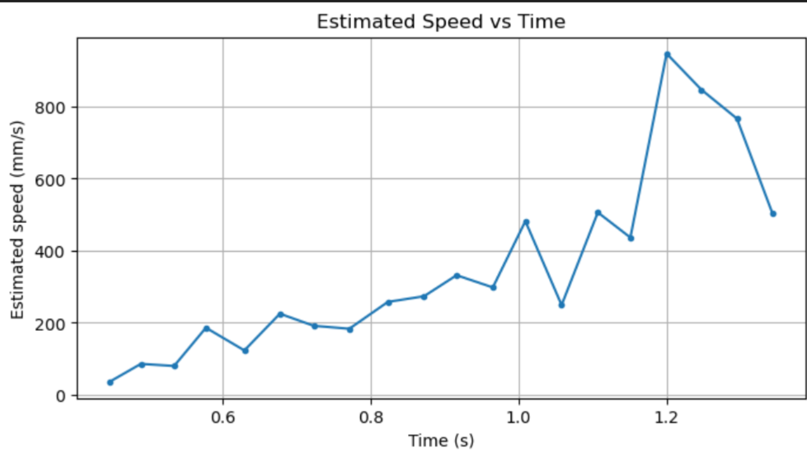
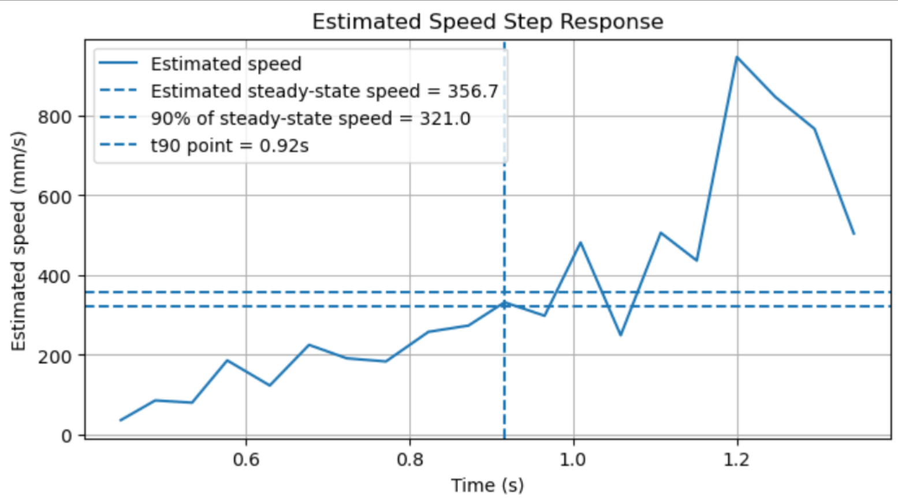
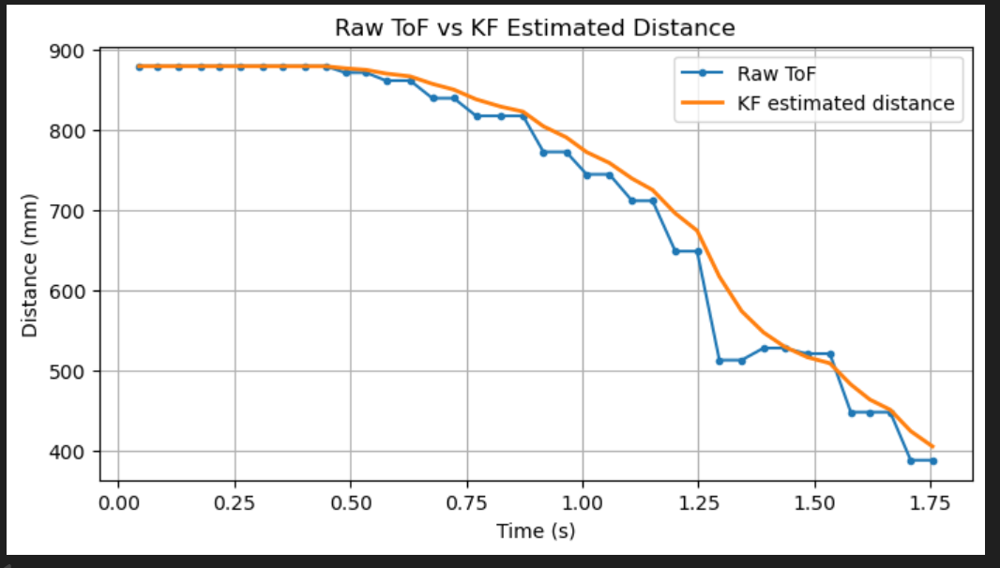
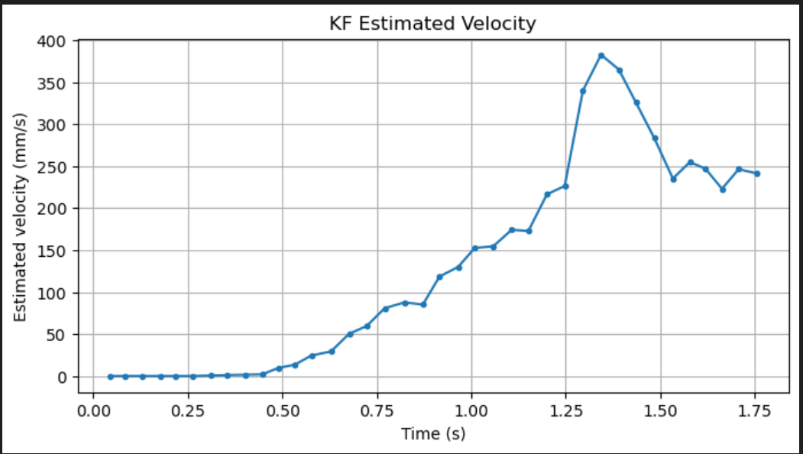
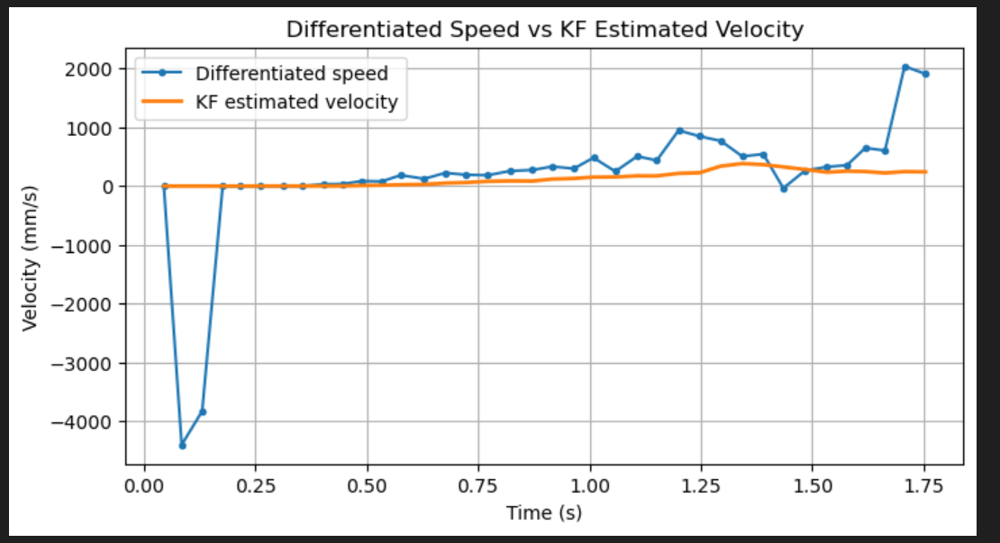
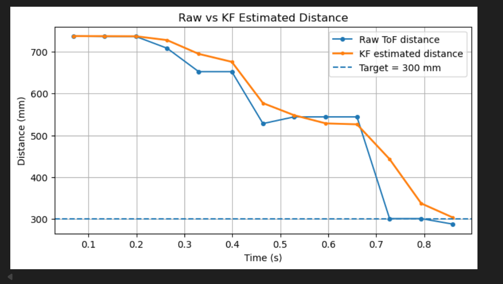
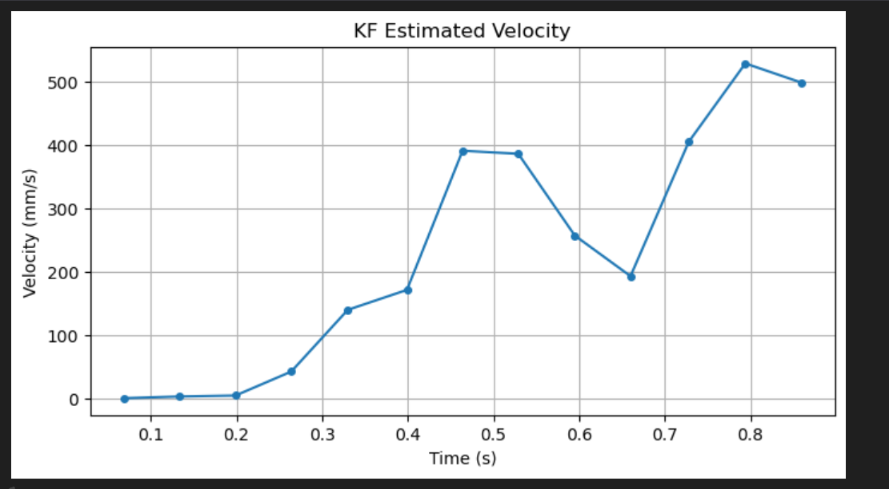
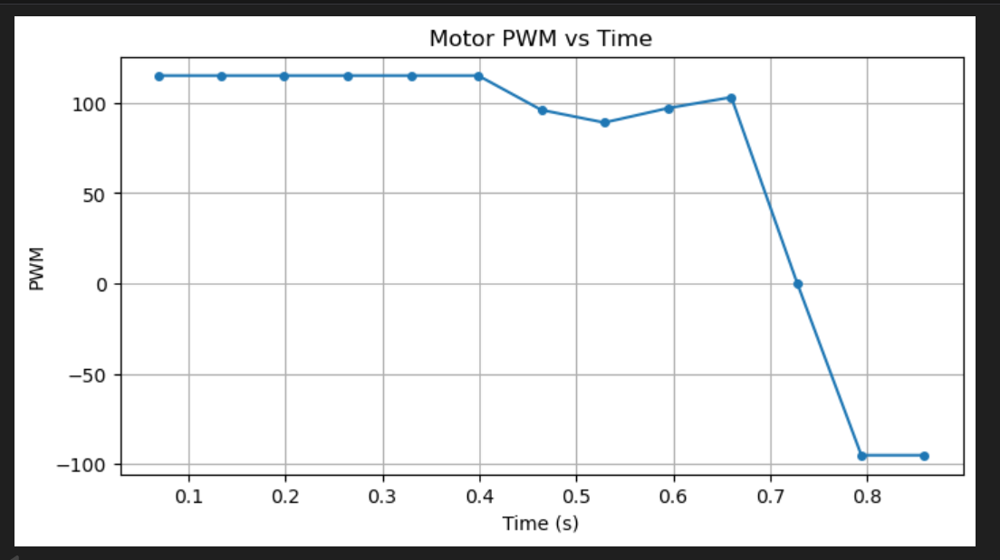

Lab 7: Kalman Filter
Lab 7
Goals
-
The objective of this lab is to implement a Kalman Filter to improve state estimation from noisy ToF measurements and achieve faster, more stable wall-approach control on the robot.
Prelab
I approximate the robot wall-approach dynamics as a first-order system based on Newton’s second law:
where \(m\) is the effective momentum term and \(x\) is the robot position.
By considering the motor input \(u\) and a linear drag term \(d\dot{x}\), the force balance becomes:
where \(d\) is the drag coefficient and \(u\) is the control input.
Combining the two equations gives the continuous-time dynamics:
I define the state vector as:
where the first state is position and the second state is velocity.
The system can then be written in continuous-time state-space form:
To implement the model in discrete time, I approximate the matrices as:
where \(\Delta t\) is the sampling time.
Since the ToF sensor measures only distance, the measurement model is:
where \(y\) is the measurement and \(v\) is the sensor noise.
I use the following Kalman Filter prediction and update equations:
where \(\Sigma_u\) is the process noise covariance and \(\Sigma_z\) is the measurement noise covariance.
Lab Tasks
Task 1: Estimate Drag and Momentum
In this task, I performed a step-response experiment to estimate the drag and momentum terms of the robot. I drove the robot toward the wall using a constant motor input while logging the ToF distance and motor PWM over time. After testing several input values, I selected a step input of PWM = 65 because it produced a more stable response and reduced excessive overshoot near the wall.
I first plotted the raw ToF measurements and then applied a moving-average filter to smooth the distance signal. Based on the smoothed ToF data, I estimated the robot speed using numerical differentiation. This allowed me to obtain the speed response of the system and extract the steady-state speed and rise time needed for system identification.
Step Response Processing Code
# Smooth the ToF distance signal
window = 5
kernel = np.ones(window) / window
d_smooth = np.convolve(d_mm, kernel, mode='same')
# Compute speed from the smoothed distance
v = np.zeros_like(d_smooth)
v[1:] = -(d_smooth[1:] - d_smooth[:-1]) / (t[1:] - t[:-1])
# Select a representative steady-state region
mask_ss = (t >= 0.85) & (t <= 1.15)
v_ss = np.mean(v[mask_ss])
# Compute the 90% rise-time point
v90 = 0.9 * v_ss
idx_90 = np.where((t >= t0) & (v >= v90))[0][0]
t90 = t[idx_90] - t0
Figure 1 shows the raw ToF distance and the smoothed ToF distance during the step-response experiment. The measured distance decreases overall as the robot moves toward the wall, while the smoothed signal reduces the effect of quantization and small fluctuations in the raw measurements.

Figure 2 shows the estimated speed obtained from the smoothed ToF data. Although some fluctuation remains because the velocity is obtained by numerical differentiation, the overall trend clearly shows the rising speed response of the robot under a constant motor input.

Figure 3 shows the final speed step-response plot used to extract the steady-state speed and the 90% rise time. From this response, I estimated the steady-state speed as 356.7 mm/s and the 90% rise time as 0.92 s. The corresponding 90% steady-state speed is 321.0 mm/s.

Using the step input \(u_{step} = 65\), the estimated steady-state speed \(v_{ss} = 356.7\ \text{mm/s}\), and the 90% rise time \(t_{90} = 0.92\ \text{s}\), I estimated the drag and momentum parameters as:
\( d = \dfrac{u_{step}}{v_{ss}} = \dfrac{65}{356.7} \approx 0.182 \)
\( m = \dfrac{d\,t_{90}}{\ln 10} \approx 0.0728 \)
These identified parameters were then used in the next task to initialize the state-space model and the Kalman Filter.
Task 2: Initialize the Kalman Filter in Python
In this task, I used the drag and momentum terms estimated in Task 1 to initialize the Kalman Filter model in Python. I first constructed the continuous-time state-space model and then discretized it using the sampling time obtained from the logged step-response data. After that, I defined the measurement matrix, the initial state vector, and the covariance matrices required for Kalman Filter implementation.
Since the ToF sensor only measures distance, I used a measurement matrix that maps the first state to the measured distance. I also initialized the state vector using the first ToF sample and assumed zero initial velocity. These initialized matrices and covariance terms were then used in the next task to implement and test the Kalman Filter in Jupyter.
Kalman Filter Initialization Code
# Use the extracted step-response quantities
u_step = 65.0
v_ss = 356.7
t90 = 0.92
Delta_t = 0.0462
# Estimate drag and momentum
d = u_step / v_ss
m = d * t90 / np.log(10)
# Continuous-time model
A = np.array([
[0.0, 1.0],
[0.0, -d/m]
])
B = np.array([
[0.0],
[1.0/m]
])
# Discretize the model
Ad = np.eye(2) + Delta_t * A
Bd = Delta_t * B
# Measurement model and initialization
C = np.array([[-1.0, 0.0]])
x0 = np.array([
[-880.0],
[0.0]
])
Sigma_u = np.array([
[25.0, 0.0],
[0.0, 6400.0]
])
Sigma_z = np.array([
[400.0]
])
Using the estimated steady-state speed and rise time from Task 1, I obtained the drag coefficient and momentum term as:
\( d \approx 0.182,\qquad m \approx 0.0728 \)
With these values, the continuous-time state-space model becomes:
\[ A = \begin{bmatrix} 0 & 1 \\ 0 & -2.5028 \end{bmatrix}, \qquad B = \begin{bmatrix} 0 \\ 13.7347 \end{bmatrix} \]
Using the sampling time \(\Delta t = 0.0462\ \text{s}\), I discretized the model and obtained:
\[ A_d = \begin{bmatrix} 1 & 0.0462 \\ 0 & 0.8844 \end{bmatrix}, \qquad B_d = \begin{bmatrix} 0 \\ 0.6345 \end{bmatrix} \]
I defined the measurement matrix and the initial state as:
\[ C = \begin{bmatrix}-1 & 0\end{bmatrix}, \qquad x_0 = \begin{bmatrix} -880 \\ 0 \end{bmatrix} \]
Finally, I initialized the process noise covariance and measurement noise covariance as:
\[ \Sigma_u = \begin{bmatrix} 25 & 0 \\ 0 & 6400 \end{bmatrix}, \qquad \Sigma_z = \begin{bmatrix} 400 \end{bmatrix} \]
These matrices and initial values were used in the next task to implement and test the Kalman Filter offline in Jupyter.
Task 3: Implement and Test the Kalman Filter in Jupyter
In this task, I implemented the Kalman Filter in Jupyter to verify that the initialized model from Task 2 could provide reasonable state estimates. I used the logged step-response data as the input and measurement sequence, and applied the Kalman Filter recursively over the full dataset. The main goal of this task was to compare the KF-estimated distance and velocity with the raw ToF data and the numerically differentiated speed.
I first tested the filter using the initialized covariance matrices from Task 2. The filter was able to smooth the distance estimate, but the estimated velocity still showed noticeable peaks. I then adjusted the measurement noise covariance to make the filter trust the model slightly more than the raw ToF measurements. After tuning, the offline KF produced smoother distance and velocity estimates and became more suitable for on-board implementation.
Kalman Filter Implementation Code
def kf(mu, sigma, u, y, A, B, C, Sigma_u, Sigma_z):
# prediction
mu_p = A @ mu + B @ u
sigma_p = A @ sigma @ A.T + Sigma_u
# update
sigma_m = C @ sigma_p @ C.T + Sigma_z
K = sigma_p @ C.T @ np.linalg.inv(sigma_m)
mu = mu_p + K @ (y - C @ mu_p)
sigma = (np.eye(mu.shape[0]) - K @ C) @ sigma_p
return mu, sigma
mu = x0.copy()
sigma = np.eye(2) * 10.0
mu_hist = []
for k in range(len(t)):
u_k = np.array([[u_kf[k]]])
y_k = np.array([[y_meas[k]]])
mu, sigma = kf(mu, sigma, u_k, y_k, A_kf, B_kf, C_kf, Sigma_u, Sigma_z)
mu_hist.append(mu.copy())
mu_hist = np.array(mu_hist)
dist_est = -mu_hist[:, 0, 0]
vel_est = mu_hist[:, 1, 0]
Figure 4 compares the raw ToF distance with the KF-estimated distance. The estimated distance follows the overall trend of the raw measurement while reducing small fluctuations and quantization effects. This indicates that the Kalman Filter can provide a smoother and more reliable distance estimate than the raw ToF signal alone.

Figure 5 shows the KF-estimated velocity. Compared with the direct numerical differentiation of the ToF distance, the velocity estimated by the Kalman Filter is more stable and physically interpretable. The estimate remains smooth while still capturing the overall acceleration of the robot as it approaches the wall.

Figure 6 directly compares the numerically differentiated speed with the KF-estimated velocity. The differentiated speed contains large spikes and strong sensitivity to measurement noise, while the KF-estimated velocity is significantly smoother. This result shows that the Kalman Filter is more suitable for estimating the robot velocity than direct differentiation of the noisy ToF signal.

During this offline validation process, I also tuned the covariance matrices. I initially used a smaller measurement noise covariance, but the filter response was still too sensitive to the raw ToF fluctuations. Therefore, I increased the measurement noise covariance from \(20^2\) to \(30^2\), i.e.,
\[ \Sigma_z = \begin{bmatrix} 900 \end{bmatrix} \]
This adjustment made the filter trust the model slightly more than the raw measurements, which produced smoother distance and velocity estimates. These offline results confirmed that the Kalman Filter was working properly and could be integrated on the robot in the next task.
Task 4: Implement the Kalman Filter on the Robot
In this task, I integrated the Kalman Filter into the robot and used the KF-estimated states for on-board control. I used the KF-estimated distance as the position feedback signal and the KF-estimated velocity in the derivative term of the PID controller. I also used the signed PWM command as the filter input so that the prediction step remained consistent during both forward motion and small corrective reverse motion.
After several iterations of on-board tuning, I selected the final controller gains as \(K_p = 0.25\), \(K_i = 0.006\), and \(K_d = 0.10\). With these parameters, the robot approached the wall in a stable manner and stopped close to the 300 mm target. Although a small backward correction still appeared near the end of the run, the overall behavior was stable and the final stopping position was accurate.
On-board KF-PID Control Code
// Final PID gains
float Kp_pos = 0.25f;
float Ki_pos = 0.006f;
float Kd_pos = 0.10f;
// Update KF first
if (kf_enabled && tof_recent_valid_available()) {
if (!kf_initialized) {
kf_reset_with_current_tof();
}
float u_norm = ((float)pwm_cmd) / 65.0f; // signed input
float z_meas = (float)current_tof_reading;
kf_step(u_norm, z_meas);
}
// Use KF-estimated states for control
float dist_for_control = kf_initialized ? kf_dist_est_mm : (float)current_tof_reading;
float vel_for_control = kf_initialized ? kf_vel_est_mmps : 0.0f;
current_error = dist_for_control - (float)pid_pos_target;
P_term = Kp_pos * current_error;
error_integral += current_error * dt_i;
I_term = Ki_pos * error_integral;
D_term = -Kd_pos * vel_for_control;
control_u = P_term + I_term + D_term;
Figure 7 shows the raw ToF distance and the KF-estimated distance during the final on-board control run. The KF-estimated distance is smoother than the raw measurement while still following the overall motion trend. The target distance of 300 mm is also shown, and the final estimated distance converges close to this target.

Figure 8 shows the KF-estimated velocity during the same run. The velocity estimate remains smooth enough for feedback use and captures the main motion phases of the robot, including the rapid approach toward the wall and the later corrective adjustment.

Figure 9 shows the motor PWM during the final run. The controller first applies a strong forward command, then gradually reduces the input as the robot approaches the target. Near the end of the motion, only a small reverse correction is applied, which indicates that the final KF-PID controller is much more stable than the earlier oscillatory versions.

I also recorded a video of the final successful run. The video shows that the robot approaches the wall smoothly, performs only a small backward correction near the end, and finally stops at an accurate position close to the desired target distance.
Overall, this task shows that the Kalman Filter was successfully integrated on the robot and could be used together with PID control for real-time wall-approach behavior. Compared with the earlier raw-measurement-based behavior, the final KF-PID controller produced smoother state estimates, reduced oscillation, and achieved a more accurate stopping position.
Appendix
1. An announcement of AI usage
I used AI tools to support parts of this lab, mainly for webpage/HTML formatting, minor code edits and debugging, and polishing the written explanations for clarity and conciseness. Throughout the assignment, I verified the suggestions against the lab requirements, tested changes on my own setup, and made final design and implementation decisions independently based on my own understanding.